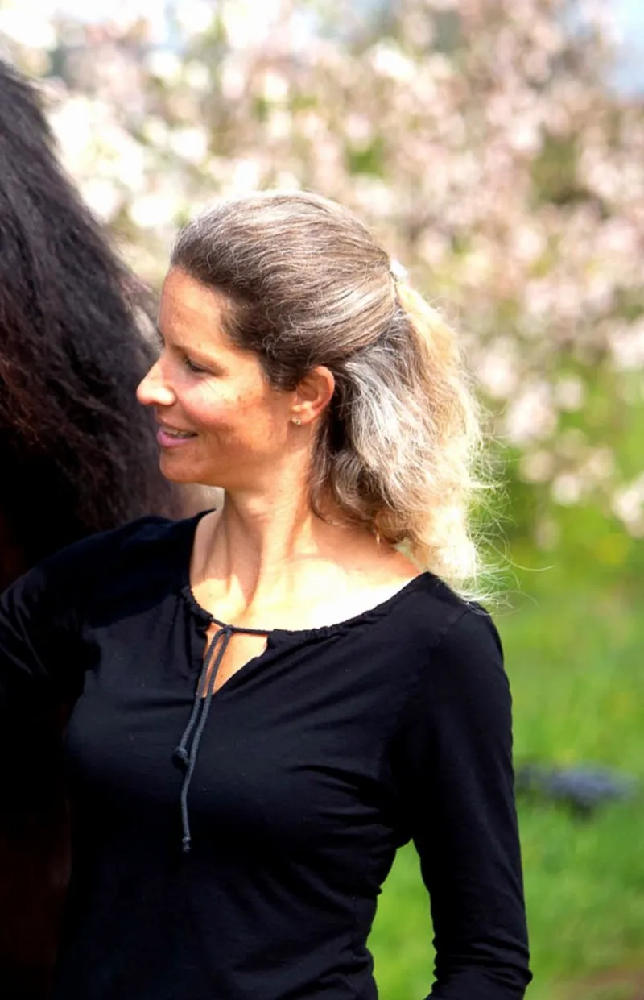

Petra
Coach & Übersetzerin der PferdeCoach für Neurosystemische Integration nach Verena König und zertifizierte Raidho-Trainerin. Feinfühlig und gut geerdet folgt sie ihrer Berufung: zu sehen, wie du immer stärker, freier und selbstbestimmter dich selbst wahrnimmst, lebst und ausdrückst.